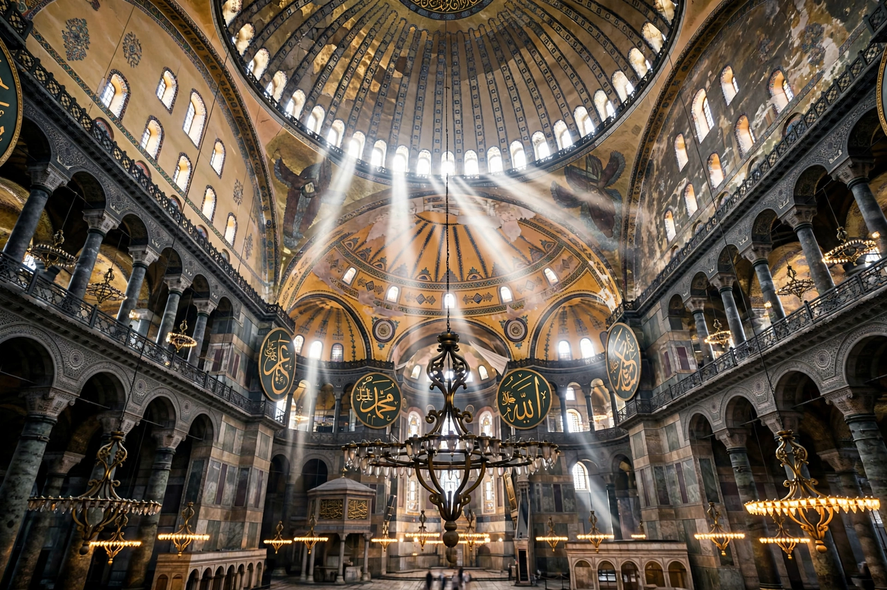

Hagia Sophia
From Wikipedia, the free encyclopedia

[Image: Inside Hagia Sophia: the vast dome floating above galleries and great chandeliers]Inside Hagia Sophia: the vast dome floating above galleries and great chandeliers
Hagia Sophia (Greek for 'Holy Wisdom') is a monumental former cathedral in Istanbul, built under the Byzantine emperor Justinian I and inaugurated in 537 AD. Designed by Anthemius of Tralles and Isidore of Miletus, its immense dome — about 31 metres across, floating on a ring of windows — was an engineering marvel and the world's largest cathedral for nearly a thousand years.
Hagia Sophia served as the seat of the Ecumenical Patriarch and the ceremonial heart of the Byzantine Empire, became a mosque after the Ottoman conquest of 1453 (minarets added, mosaics plastered over), a museum in 1935 under Atatürk's secular republic, and a mosque again in 2020 — a change that drew international debate. Its mosaics, including the Deësis Christ Pantocrator, are masterpieces of Byzantine art. It remains the defining symbol of Constantinople/Istanbul.
Architecture
The building combines a longitudinal basilica with a centralised dome on pendentives — the triangular segments that transfer the dome's weight to four great piers. Earthquakes repeatedly damaged the dome (the western arch collapsed in 558 and was rebuilt higher). Buttressing by Sinan in the 16th century stabilised the structure for the Ottoman era.
See also
Byzantine Empire · Constantinople · Justinian I · Ottoman Empire · Istanbul · Mosque